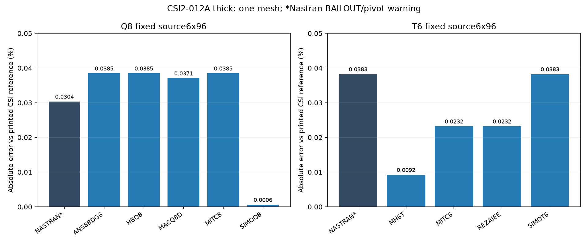

20 October2026. Single fixed source6×96 mesh, no refinement or convergence study. Five Q8 and four T6 MYSTRAN formulations plus matching Nastran are measured at a geometry-defined free outer-edge point. Nastran results require BAILOUT=−1 and remain pivot-warning qualified; the two initial fatal9137 runs are preserved and reported.
Engineering source: user-supplied Example2-012a-thick.s2k. Full annulus, inner radius1.4 in, outer radius2 in, h0.5 in; E=18,000,000 psi, G=6,923,076.92307692 psi, nu0.3. Source Shell-Thick with V13/V23 modifiers1, not the separate1000× shear-stiffened2-012B model. PSHELL MID1=MID2=MID3=1, transverse shear factor5/6. Units lb/in.
The independent thick target is outer-edge UZ=−0.00534 in, bending plus shear. CSI quotes bending−0.00521 in and shear−0.000125 in; their printed sum is−0.005335 in and the quoted combined value is rounded−0.00534. The thin/bending-only target is not used for these thick runs. CSI SAP2000 A-thick also reports−0.00534 in.
All percentages below use the printed combined−0.00534 target. Differences below0.04% should not be interpreted as an exact analytical ranking of formulations: the independent values are rounded, and source polygon geometry/load length differ slightly from an ideal circular annulus. A single mesh does not establish convergence or a general shell validation.
All672 original source coordinates/IDs and576 source quads are retained. Q8 enriches to576 CQUAD8 /1920 nodes. T6 splits each source quad into two CTRIA6, giving1152 elements /2496 nodes. New shared edge nodes are arithmetic chord midpoints. No projection to an exact circle, no new mesh level and no remeshing were applied. Both families have positive +Z integration-point Jacobians.
The source inner-edge96 nodes are SPC123, with all rotations free. The same SPC123 is extended to its96 new midsides:192 supported nodes per family. This is a simply supported inner boundary, not a full rotational clamp. All GRID CP/CD=0; basic UZ is extracted directly from native OP2.
The S2K uses96 DUMMY frame segments on the r1.8-in source polygon, loaded by800 lb/in in gravity (basic−Z). All frame stiffness, mass and weight modifiers are zero. No beam stiffness is introduced into the shell DAT. The physical line traction is transferred with consistent quadratic edge weights L/6,2L/3,L/6, including the new midsides; contributions at shared corners are accumulated.
This is the consistent shell-edge representation of the distributed physical load, not an assertion of identical SAP2000 dummy-frame fixed-end-force processing. Source chord length11.3077150232 in gives total FZ=−9046.17201856 lb. The ideal circumference would give−9047.78684234 lb: a0.01785% geometric load-length difference. The actual source-segment load is retained without rescaling to improve agreement. Global resultant moments are zero to input precision.
Native OP2 OLOAD verifies every loaded quadratic node and total force/moment for all11 accepted outputs. The dummy frames are only a load carrier and are omitted as structural elements. In particular, uniform pressure over the annulus is not substituted for the r1.8 line load.
The primary observation is GRID577 at(2,0,0) in, identified by geometry within1e−10 in, with combined thick reference−0.00534 in. Every original outer-edge vertex is additionally exported:96 locations per run,1056 signed observations in total. The outer-vertex spread is zero at native OP2 float precision for each run. Neither a maximum-response probe nor a varying nearest node is used as the primary observable; quadratic outer midsides have chord radii slightly below2 and are not silently mixed into the source-vertex statistic.

| Family | Solver/formulation | UZ at(2,0,0) (in) | Independent (in) | Error (%) | Status |
|---|---|---|---|---|---|
| Q8 | NASTRAN | -0.005338378251 | -0.00534 | 0.0303698 | PIVOT_WARNING_BAILOUT |
| Q8 | ANS8BDG6 | -0.00533794472 | -0.00534 | 0.0384884 | NATIVE_OP2 |
| Q8 | HBQ8 | -0.00533794472 | -0.00534 | 0.0384884 | NATIVE_OP2 |
| Q8 | MACQ8D | -0.005338020157 | -0.00534 | 0.0370757 | NATIVE_OP2 |
| Q8 | MITC8 | -0.00533794472 | -0.00534 | 0.0384884 | NATIVE_OP2 |
| Q8 | SIMOQ8 | -0.005339966156 | -0.00534 | 0.00063379 | NATIVE_OP2 |
| T6 | NASTRAN | -0.005337956827 | -0.00534 | 0.0382617 | PIVOT_WARNING_BAILOUT |
| T6 | MH6T | -0.005340493284 | -0.00534 | 0.00923753 | NATIVE_OP2 |
| T6 | MITC6 | -0.005338759162 | -0.00534 | 0.0232367 | NATIVE_OP2 |
| T6 | REZAIEE | -0.005338759162 | -0.00534 | 0.0232367 | NATIVE_OP2 |
| T6 | SIMOT6 | -0.005337956827 | -0.00534 | 0.0382617 | NATIVE_OP2 |
Both initial Nastran runs stop with fatal9137 (excessive pivot ratios), with warnings6916/4698. Those outputs are failed, not zero displacement and not accepted reference runs. The diagnostic Q8 table identifies a high ratio on an R3 (drilling) DOF. No extra rotational support or formulation stiffness was added to conceal it.
Separate reruns add only PARAM,BAILOUT,−1. Geometry, material, loads, SPC and numerical discretization remain identical. Both recovered OP2 files contain finite GRID displacements and retain warning4698. They are PIVOT_WARNING_BAILOUT, not unconditional solver-validation passes. The accepted Nastran Q8 displacement is−0.00533837825 in (0.03037% from printed reference); T6 is−0.00533795683 in (0.03826%).
All four Nastran executions, including the two original failures, were launched directly through the configured run_nastran.bat. There was no license failure. The nine MYSTRAN cases terminate normally. No formulation kernel was changed.
There are13 execution receipts:two failed strict Nastran and11 accepted finite OP2 outputs (nine MYSTRAN plus two warning-qualified Nastran recoveries). Physical bulk signatures match within each family, DAT hashes remain unchanged after preparation, all GRID displacements are finite and explicit SPC residuals are zero.
Unloaded in-plane translations and RZ are zero at native precision in the accepted outputs. This supports interpretation of the transverse response but does not remove the Nastran pivot warning. Applied-force nodal distribution and resultant checks use OP2 OLOAD. Maximum global reaction-force imbalance is0.000550 lb out of9046.17 lb (about6.1e−8 relative); maximum resultant-moment imbalance is below3.4e−11 lb-in. These are global equilibrium checks, not a claim of all-point stress or shear-recovery validation.
All numerical displacements and force checks are from OP2; F06 is diagnostic only. The reported total thick deflection does not separately extract bending and shear contributions. No thin run or1000× shear-stiffness variant is included. All tested values lie within0.04% of the rounded thick reference, with the reference-precision and polygon-model qualifications above.
CSI Example2-012, supplied verification pages and thick S2K engineering tables. Original files and failed outputs remain local. Source program/license metadata, internal Python and raw solver outputs are not published.
Executed fixed-source DAT:11 accepted-output decks, including the two explicitly warning-qualified Nastran BAILOUT recoveries. The two failed strict inputs are preserved locally and identified above. Complete benchmark DAT archive.